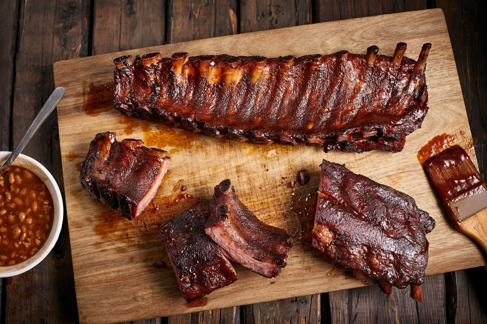

Mickey Cohen's Formosa Cafe's Sticky Ribs

Mickey Cohen was an Amercan gangster, boxer, and entrepreneur. He has been portrayed throughout pop culture,
notably in movies such as L.A confidential and The Lincoln Lawyer.
Ingredients
- 2 tablespoons kosher salt
- 2 tablespoons cracked black pepper
- 1 tablespoon cinnamon
- 1 rack baby back ribs
- 2 teaspoons peanut or vegetable oil
- 2 tablespoons garlic, chopped
- 1/2 cup orange juice
- 1/4 cup sweet soy (kecap manis)
- 3 tablespoons sweet chili sauce
- 1 teaspoon black sesame seeds, for garnish
- 1 scallion, chopped, for garnish
Steps
- Line a bamboo steamer basket with parchment paper and set the steamer in a wok. Add enough water to just
touch the bottom rim of the steamer basket and bring the water to a boil. Cover the bamboo steamer with a
lid.
- Mix together the salt, black pepper and cinnamon in a small mixing bowl and rub it all over the ribs.
- Cut the rack in half crosswise and lay the pieces in the steamer (it's ok if they overlap as long as the lid
closes).
- Cover the steamer and steam the ribs until fork tender, about 1 hour, adding water to the wok as needed so
the basket doesn't burn
- Remove the ribs and let stand until cool enough to handle. Cut the racks into individual ribs
- Drain and dry the wok and return to medium heat
- Add the peanut oil and garlic and cook until the garlic softens, about 2 minutes
- Pour in the orange juice, sweet soy and chili sauce and bring to a simmer
- Reduce the heat to medium low, add the ribs and cook, tossing frequently, until the ribs are glazed and the
sauce is sticky, 8 to 10 minutes
- Transfer the ribs to a plate and garnish with the sesame seeds and scallions
Back to Home Page